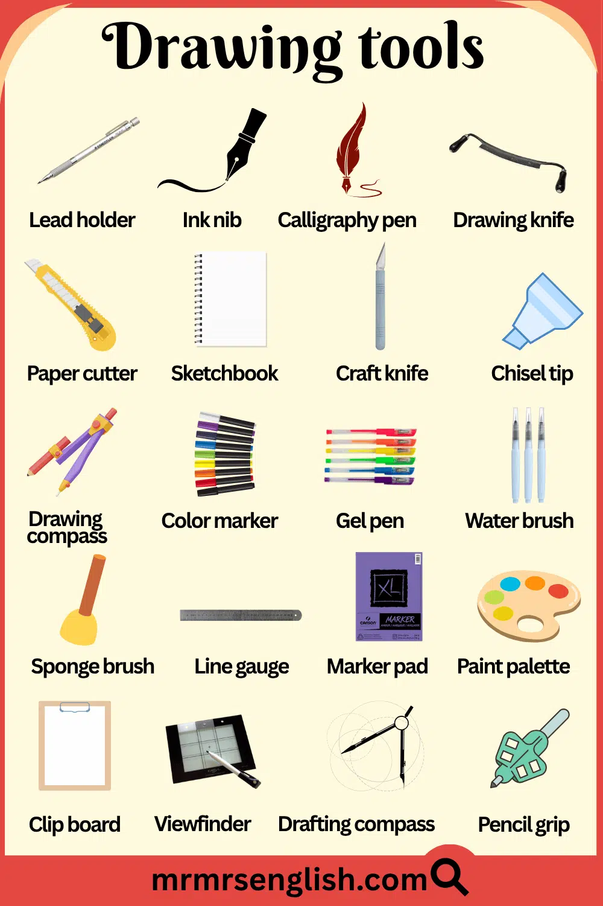
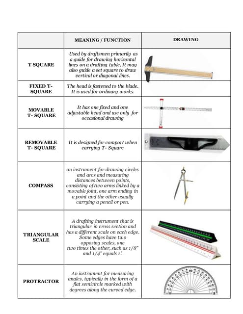

← Back to All Weeks
📐 SS1 Technical Drawing: Week 3
Drawing Instruments and Materials
Learning Objectives: By the end of this lesson, students should be able to identify and state the uses of basic technical drawing instruments and materials.
1. Overview
These are the tools and materials used to produce accurate and neat technical drawings. Without proper instruments, achieving precision and standardization is impossible.

2. Types of Drawing Instruments
A. Measuring & Drawing Tools
- T-Square – Used to draw horizontal lines and as a guide for set squares. The head slides against the edge of the drawing board.
- Set Squares (45° and 30°/60°) – Used with the T-square to draw vertical lines and angles of 30°, 45°, 60°, and 90°
- Ruler/Scale Rule – For measuring distances and drawing straight lines. Scale rules have multiple scales for drawing to size.
- Protractor – For measuring and drawing angles from 0° to 180° or 360°
- Compass – For drawing circles and arcs. Has a needle point and pencil/pen point.
- Divider – For transferring measurements and dividing lines or arcs into equal parts
- French Curves – Templates with various curves for drawing irregular curves that cannot be drawn with a compass
- Flexible Curve – A bendable ruler that can be shaped to draw custom curves

B. Drawing Surfaces
- Drawing Board – A flat, smooth wooden or plastic surface to place drawing sheets. Must have perfectly square edges.
- Drawing Table – Adjustable professional surface that can tilt for comfortable drafting
C. Writing/Marking Instruments
- Pencils – Different grades for different line weights:
| Grade | Type | Use |
|---|
| 4H – 6H | Very Hard | Construction/guide lines |
| 2H – 3H | Hard | Dimension lines, light work |
| H | Medium Hard | General drawing |
| HB | Medium | Lettering, sketching |
| B – 2B | Soft | Artistic shading, not for technical work |
- Technical Pens/Rapidograph – For ink drawings with consistent line width. Common sizes: 0.18mm, 0.25mm, 0.35mm, 0.5mm, 0.7mm
- Eraser – For corrections. Should be soft to avoid damaging paper.
- Erasing Shield – Thin metal plate with holes that protects surrounding lines when erasing
D. Drawing Materials
- Drawing Paper/Cartridge Paper – Standard white paper for pencil drawings. A4 is most common for students.
- Tracing Paper – Transparent paper for copying drawings or creating overlays
- Drawing Film/Vellum – Durable, transparent polyester film for professional ink drawings
- Drawing Pins/Clips – For securing paper to the drawing board
- Masking Tape – Holds paper without tearing it when removed

3. Advantages of Good Instruments
- Produce accurate, clean drawings that meet professional standards
- Increase speed and efficiency in drafting
- Improve professional quality of work
- Reduce fatigue during long drawing sessions
4. Disadvantages
- Quality instruments can be expensive for beginners
- Require maintenance and care to stay accurate
- Some instruments are fragile - compass points, pen nibs break easily
- Can be bulky to carry around
Assignment:
1. List 5 drawing instruments and state one use of each.
2. Name 3 pencil grades and their specific uses in technical drawing.
3. Why is a T-square important in technical drawing?